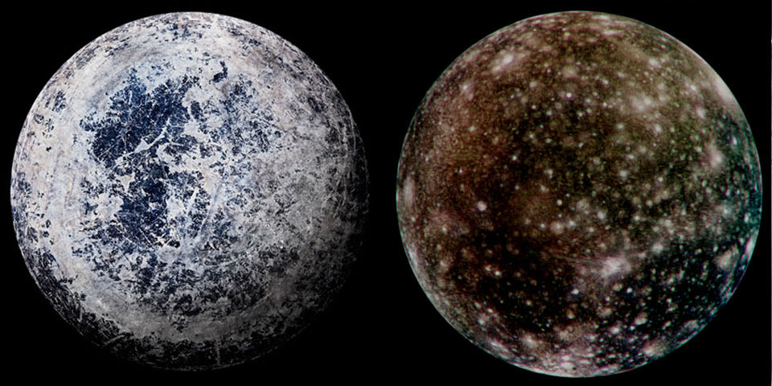
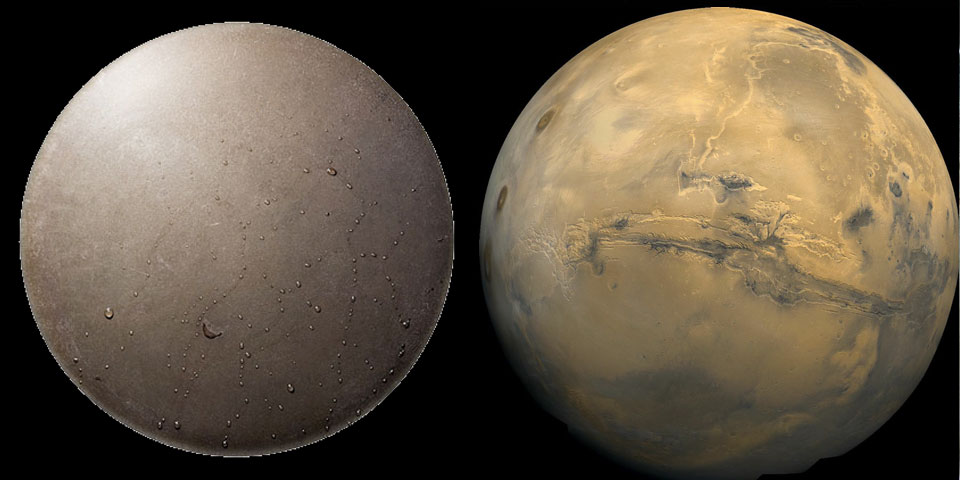

- Что такое астрономия
- Что она изучает
- На какие ветви подразделяется
-
Немого про её историю - Тестик
ἄστρον + νόμος ≈ законы звёзд; не путать с ἄστρον + λόγος = учение (слово) о звёздах
Одна из древнеших (и наиболее передовых) естественнонаучных дисциплин, изучающая небесные тела и явления.
Естественнонаучные дисциплины:
- физика
- химия
- биология
- науки о земле
a posteriori знание — следует из фактов.
А есть формальные науки:
- логика
- математика
- информатика
- статистика
a priori знание — от фактов не зависит, а получается рассуждениями.
Место формальных наук в астрономии:
наблюдение / эксперимент -> теория (модель) -> следствия (можно проверить)
^ ^
вот тут место формальной науки
(аксиомы -> определения -> теоремы -> следствия)
Почему астрономия это не формальная наука (на исторических примерах):
- Иоганн Кеплер (вместо многогранников на основе наблюдений Тихо Браге вывел cвои знаменитые законы!)
- Тихо Браге (сверхновая это не атмосферное явление, как думали раньше, она дальше луны — «неподвижные» звёзды не неизменны)
А привело всё это к окончательму краху Птолемеевской картины мира.
- Сама Земля (геодезия и физика атмосферы). Масштаб — 1–10 000 километров, десятые доли световых секунд.
-
Планеты — изначально всё, что движется относительно "неподвижных" звёзд:
- обычные планеты (достаточно массивные, чтобы иметь форму шара, недостаточно массивные для термоядерных реакций, расчистили свою траекторию от подобных тел) и всё остальное
- их спутники
- малые планеты (Плутон, Эрида, Макемаке)
- астероиды (Церера, Веста)
- кометы (из недавних — NEOWISE (C/2020 F3)).
- Звёзды — гравитационно связанные, простанственно обособленные, непрозрачные для излучения тела, в которых происходят (происходили или будут) реакции превращения водорода в гелий. Например, наше Солнце. Расстояния — как минимум несколько парсек (1 парсек это ~3 световых года)
- Звездные скопления: шаровые и рассеянные, туманности (диффузные, планетарные, остатки вспышек сверхновых). Размеры десятки парсек, а расстояния до них — килопарсеки.
- Галактики (γαλαξίας - «млечный») — большие скопления звёзд, газа и тёмной материи. Размеры десятки килопарсек, а расстояния до них — мегапарсеки. Интересно, что размеры галактик по отношению к размерам звёзд похожи на размеры живых существ по отношению к атомам, из которых они состоят (в 10 миллиардов раз меньше).
- Скопления галактик, масштаб — мегапарсеки
- Вся Вселенная в целом (космология) — миллиарды световых лет (но расстояния измеряют в красных смещениях)
- Астрометрия
- положения небесных тел
- Небесная механика
- движение небесных тел
- Астрофизика
- природа небесных тел (строение, происхождение, эволюция)
Звёздная астрономия изучает звёздные системы (нашу Галактику в основном), а теоретическая астрономия — расчёт эфемерид (видимых положений на небе) и определение орбит (обратная к расчёту эфемерид задача).
не в этот раз
Отметьте изображение спутника планеты Солнечной системы.

Решение
Эта задача не самая серьёзная :)
На правой нижней картинке — точно Марс, который планета, а никак не спутник, на изображении видны долины Маринера: гигантская система каньонов. На левой нижней видны капельки воды. Это неспроста, поскольку это изображение дна сковородки, а не спутника. Сравнивая верхние картинки, приходим к выводу что на сковородку меньше похожа правая. Так и есть, это поверхность Каллисто, спутника Юпитера, испещрённая кратерами. А левое изображение — просто сильно поцарапанная сковородка (а не Европа).
На другие подобные пары можно взглянуть тут.
Какая из фраз наиболее точно отражает положение Солнца в нашей Галактике?
- Солнце находится в центре Вселенной
- Солнце находится в галактическом балдже
- Солнце находится вне диска галактики
- «Наша хата с краю»
Решение
В центре Вселенной Солнце точно не находится — с точки зрения современной космологии
никакого выделенного центра у Вселенной нет (это утверждение называется принципом Коперника).
А положение Солнца в нашей галактике отмечено на иллюстрации ниже:

Таким образом, видим что Солнце находится в балдже Галактике (центральном утолщении), а в плоскости её диска, значит правильный ответ - 4.
Положение Солнечной системы в Галактике можно охарактеризовать так: "Наша хата с краю". (В.В.ШАРОНОВ, лекция, 1962)
Вам предлагают два бинокля: один с тридцатикратным увеличением, но в диаметром объектива 50мм, другой 20кратный, но 80мм. Какой лучше подходит для астрономических наблюдений и почему? Можете предположить, что фокусные расстояния окуляров — одинаковые.
- Первый, у него больше светосила.
- Второй, у него больше светосила.
- Тот, у которого больше увеличение.
- Оба не подходят.
Решение
Светосила — величина, характеризующая освещённость в фокальной плоскости, т.е. насколько
ярким будет получаться изображение, формируемое оптической системой. Светосила пропорциональна
квадрату относительного отверстия — отношения диаметра объектива его фокусному расстоянию.
В фотографии часто используется обозначение \(f / X\), где \(X\) — отношение фокусного расстояния
к максимальной апертуре объектива.
Для астрономических наблюдений светосила важнее увеличения, поскольку она определяет, увидите ли Вы красивую туманность или скопление, или нет (а вот то, насколько слабые звёзды Вы увидите уже определяется проницающей способностью, которая зависит просто от диаметра объектива). Таким образом, правильный ответ — 2.
В целом, второй бинокль тяжеловат и без штатива пользоваться им будет тяжело. Лучше взять что-нибудь вроде 7x50. В такой бинокль хорошо искать туманности и скопления, чтобы потом было проще навестись на них в телескоп.
10 декабря 2018 года космический аппарат «Вояджер-2» преодолел гелиопаузу. К этому времени сигналы с него приходили с задержкой 16.5 часов. Оцените, на каком расстоянии от Солнца находится гелиопауза?
Решение
Гелиопауза — это граница между гелиосферой и межзвёздной средой, то есть там,
где солнечный ветер окончательно тормозится и перемешивается с межзвёздной средой.
Когда космический аппарат вылетает за гелиопаузу, то поток заряженных частиц от Солнца
резко уменьшается, а поток галактических космических лучей — увеличивается.
При этом, изменяется и направление магнитного поля.

Не стоит путать гелиопаузу с границей ударной волны (termination shock) — область, где скорость солнечного ветра становится меньше скорости звука. Границу ударной волны можно наблюдать в раковине, когда Вы моете посуду:

К нашей радости, все эти детали не очень-то и нужны для представленной задачи. Проще всего получить ответ, вспомнив что солнечный свет долетает до Земли за восемь минут. В таком случае, расстояние до гелиопаузы равно \(16.5\, \cdot 60\, \text{мин} / 8 \, \text{мин} \cdot 1\, \text{a.е.}\) ≈ 120 астрономических единиц. Большая точность нам не нужна, поскольку граница гелиосферы — вещь непостоянная и зависит от солнечной активности.
Если бы в полночь 27го сентября 2020 года в окрестности Санкт-Петербурга Вы посмотрели в юго-восточную часть горизонта, перед Вашим взором (а ночь была ясная) бы предстало яркое небесное тело красноватого оттенка. Что это?
- Юпитер
- Альдебаран
- Нибиру летит!
- Марс
Решение
Самый простой (но нечестный!) способ решить такую задачу — воспользоваться
Стеллариумом (поставить или зайти на https://stellarium-web.org ).
Но куда полезнее и правильнее, разумеется, подумать.
Юпитер и Сатурн сейчас находятся в Стрельце — созвездии южного полушария, которое в Санкт-Петербурге едва видно на горизонте летом в полночь. К тому же, Юпитер имеет скорее желтоватый цвет, а никак не красноватый. Альдебаран — красный гигант, самая яркая звезда в созвездии Тельца, а поскольку Телец — зимнее созвездие, то в полночь на юге будет находиться зимой, а в сентябре окажется лишь на востоке.
Таким образом, остаётся Марс. Хотя, в целом, Альдебаран здесь тоже подходит.
В некоторой точке Земли звезды Дубхе и Мерак (\(α\) и \(β\) Большой Медведицы) одновременно появились над горизонтом. Где мог находиться наблюдатель?
- На экваторе
- На северном полюсе
- На \(60^\circ\) северной широты.
- Это невозможно
Решение
Дубхе и Мерак — две звёзды в «стенке» «ковша» Большой Медведицы. По ним чаще всего находят
Полярную звезду: она лежит на продолжении соединяющего их отрезка.
Звёзды на небе обращаются против часовой стрелки вокруг Полярной звезды.
Раз Дубхе и Мерак восходят одновременно, то и весь содержащий их луч лежит на горизонте,
а значит и Полярная звезда лежит на горизонте. А такое бывает только на экваторе.

- Вахрушев Гордей, 9-1
- Евстафьева Ксения, 9-3
- Рудаков Степан, 10-6
- Никитин Сергей, 10-5
- Никифоров Дмитрий, ???
- Кукушкин Дионисий, 11-6